Week 8 : Simulating Sampling Distributions
The sampling distribution is central to how we can move from t-values to p-values - yet it is one of the trickier parts of this course. The lectures and pre-lecture materials frequently deal with computer simulations to show the properties of the tests we’re using, so this week you will write your own simulation to help understand the sampling distribution!
| Quantitative Methods | |
|---|---|
| Sampling Distributions |
| Data Skills | |
|---|---|
| Simulating data in R | |
| Writing loops in R | |
| Creating histograms in R |
| Open Science | |
|---|---|
| Creating shareable code to demonstrate a statistical concept |
1. The Dataset
TLDR: There is no data to download! we’re going to make the data ourselves.
The dataset this week is very simple - we’re going to create it ourselves using R. At this point, we know a lot about the types of hypotheses that we can ask when comparing the averages of groups within a dataset. We can check our understanding of different aspects of these statistical tests by simulating data samples that have known properties (eg mean and standard deviation) and checking if the outcome of the t-test is what we would expect.
This way we can numerically validate the tests we’re running and take a look under the hood and see what sort of processes Jamovi and R are using to compute the tests for us.
There is a lot of code in this session - don’t be afraid to ask for help from your tutors!
2. The Challenge
Today, we’ll first introduce some concepts and functions in R to simulate a data sample and compute our own one sample t-test. With that in hand, we will set up code to run thousands of tests in one go to help us to better understand sampling distributions.
3. Simulating data samples in R
The rnorm() function in R is used to generate random numbers from a normal (Gaussian) distribution. A call to rnorm() looks like this:
rnorm(n, mean = 0, sd = 1)We can see that rnorm() takes three values as inputs
| input | Description |
|---|---|
n |
The number of random numbers you want to generate, we always need to specify this. |
mean |
The mean (average) of the normal distribution. The default value is 0 if it isn’t specified |
sd |
The standard deviation of the normal distribution. The default value is 1 if it isn’t specified |
So we could tweak these input arguments to simulate any number of data points from any normal distribution that we wish.
What code would we need to write to simulate the following?
20 data points from a distribution with mean of 1 and standard deviation of 2
- R code here -> .
33 data points from a distribution with mean of -3 and standard deviation of 1.23
- R code here -> .
five thousand data points from a distribution with mean of 1.789 and standard deviation of 18.2
- R code here -> .
Open Jamovi, install the Rj add-on and open a new Rj window before we go any further
We can use rnorm() within the Rj code window as usual. Here I’m simulating 20 data points from a distribution with a mean of 1 and a standard deviation of 2. Try running the same code in your window.
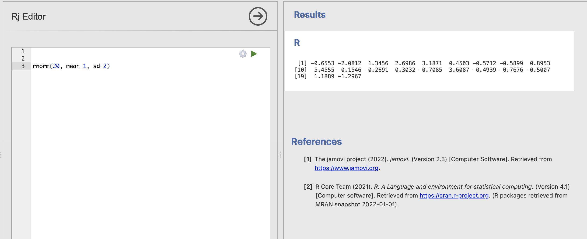
These 20 simulated numbers could now represent a data sample for a variable in an analysis. The difference is we have absolute confidence about the ‘truth’ of the population statistics underlying this data sample.
You may notice that you do get 20 numbers, but that you get a different 20 numbers than I did! This is as rnorm() works hard to generate random numbers that are different each time.
You can verify the random nature of the simulated data by running your code multiple times.
Even though the code stays the same you will get a different data sample each time. Remember that the code and the underlying distribution remain the always the same but the data sample is changing.
This is actually a good thing for us. Real experiments and data collection always have an element of random luck and we want our simulations to reflect this as well.
Sampling is a fundamental process in statistics where a subset of individuals from a population is selected to estimate characteristics of the whole population. This is built from the assumption that the subset of individuals in our sample is representative of that population.
Some samples will be more representative than others. We can do a lot of practical work and planning to get the best possible sample for our research but there is always some random chance in who ends up in a data sample and who does not.
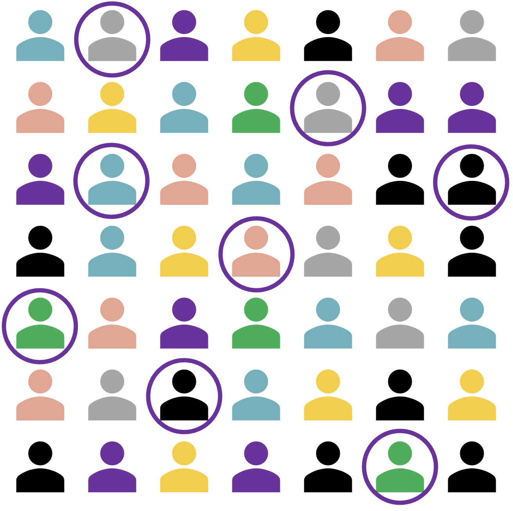
There are two main reasons why a sample might not be representative.
Bias if the data collection has included some bias (intentional or accidental) towards a subgroup of our population then it is very likely that this will lead to an unrepresentative sample. This is not something we can solve with statistics. Good reseach design, consideration of ethics and thorough planning is the only way to avoid systematic biases.
Luck even if we have a unbiased data collection approach, two samples that draw from the sample population can still be different due to random chance. This will always be true when we are restricted to looking at a subset of the full population - fortunately, this is something we can quantify with statistics. We’ll explore how in this session.
The code we write this week will simulate drawing a subset of individuals from a population. Each iteration of the code could be considered as a separate replication of the same experiment.
3. Estimating the samping distribution of the mean
In week 2 we discussed how sampling relatively small amount of data from a wider population can impact our estimates of values like the mean.
To recap, let’s say we’re interested in computing the average attainment for secondary school children on a particular vocabulary test. Our target population might be ‘all secondary school students in the UK’ but is it practically impossible to get data from every single student currently in secondard school. We have to make do with smaller data samples of a few tens or few hundreds of students (or even more, if we’re lucky).
Our simulations do exactly this. The parameters we pass into rnorm() define ‘population level’ characteristics in the form of a normal distribution and each time we run the function we draw a ‘sample’ of a fixed number of data points from that population. We can think of this as rerunning our data sampling every time the function is executed. This would be massively complicated, time consuming and expensive in real life, but with a few assumptions a computer can simulate it in a fraction of a second.
We can now start to explore how sampling variability - AKA the random differences between data samples from the same population - can impact our estimates of the mean and standard deviation.
Update your code to store the data sample into a variable and compute the mean with mean() and standard deviation with sd(). The result might look like this.
sample = rnorm(20, mean=1, sd=2)
# Compute the mean
print('Mean:')
print(mean(sample))
# Compute the standard deviation
print('Standard Deviation:')
print(sd(sample))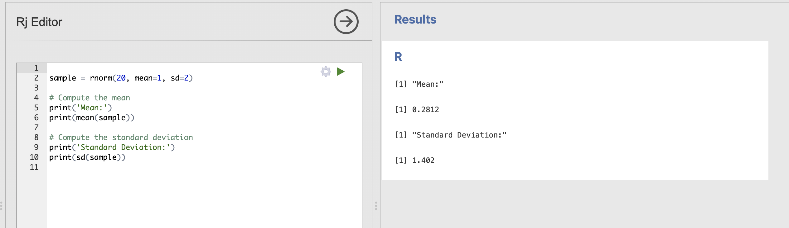
Running this code will show the mean and standard deviation of each individual data sample, try running this a few times. Notice that the values are sometimes close to our ‘population’ estimates of mean = 1 and standard deviation = 2 but also sometimes quite far away.
Try tweaking your code to answer these questions
We can get an informal sense of sampling variability by clicking to rerun this code a few times, but R code allows us to do much better, we can tweak the code to rerun this analysis hundreds or thousands of times to explicitly quantify the variability we see.
To do this, we’ll need a code element called a loop which looks something like this
num_simulations = 10
# Loop to perform simulations
for (i in 1:num_simulations) {
print(i)
}There are two aspects to this code block. The first sets the number of simulated data samples we want to draw.
num_simulations = 10This line sets the variable num_simulations to 10. This means you want to perform 10 iterations in the loop.
The second part is the loop itself:
for (i in 1:num_simulations) {
print(i)
}This is a for loop that will iterate from 1 to num_simulations (which is 10 in this case). Here’s what happens inside the loop:
- Initialization: The loop starts with
iset to 1. - Condition: The loop will continue to run as long as
iis less than or equal to num_simulations. - Increment: After each iteration,
iis incremented by 1.
Inside the loop, the print(i) statement is executed, which prints the current value of i to the console.
The output of this code will be the numbers from 1 to 10, each printed on a new line. The full output might look like this:
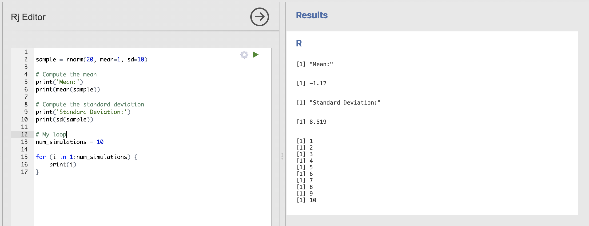
Printing the value of i is instructive but really we want our loop to include some interesting computations. Next, we should move our sampling code within the curly brackets {} of the loop.
Everything within the those curly brackets will be repeated on every iteration of the loop. So if we includ the code to draw a sample and compute the mean, it will be repeated every time. Here is an example:
# My loop
num_simulations = 10
for (i in 1:num_simulations) {
sample = rnorm(20, mean=1, sd=10)
print(mean(sample))
}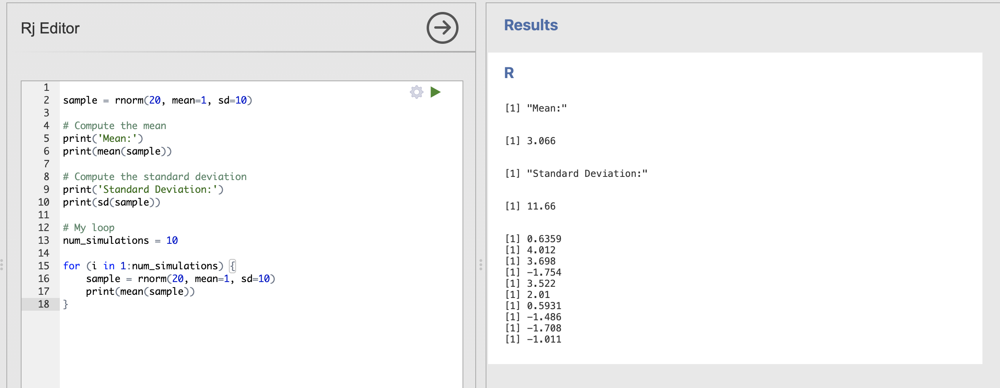
The output of the loop is now the mean of each data sample, though the exact values you get will be slightly different to mine.
We can see that 20 samples drawn from a population with mean = 1, sd = 10 we have extremely variable estimates of the mean. Try reducing the standard deviation back down to 2 to see the result.
# My loop
num_simulations = 10
for (i in 1:num_simulations) {
sample = rnorm(20, mean=1, sd=2)
print(mean(sample))
}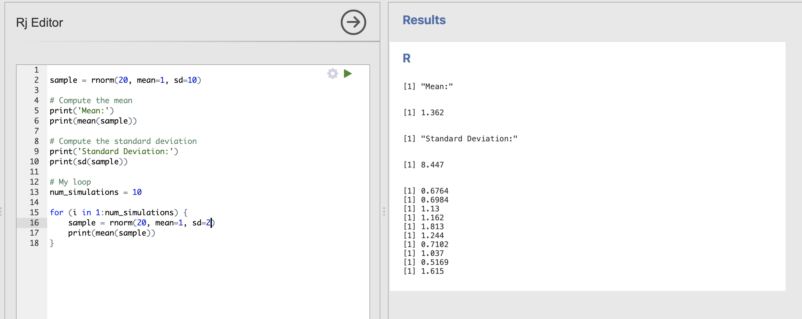
These are much closer to our expected population value of 1.
4. Visualising the samping distribution of the mean
We’re very close to completing our loop. There is one final issue to sort.
At the moment, the estimated sample is lost every time the code in the loop restarts - we need to store the whole set of mean values for every single simulation if we want to properly see what is going on.
For this we need to add two elements to the loop. Firstly we need to create a variable to store the means we estimate. We do this before the loop starts.
# Create a numeric variable to store the means
mean_values = numeric(num_simulations)and secondly, within the loop, we need to add the estimated mean to our new mean_values variable.
# Compute and store the mean of the data sample
mean_values[i] = mean(sample)mean_values can store many numbers altogether in a list or vector. Each individual element can be accessed using the square bracket notation. For example mean_values[5] would access the fifth value in the list. The code above will store each value in to the ith position in the list so that we keep them all.
The final code should look like this:
# My loop
num_simulations = 10
# Create a numeric variable to store the means
mean_values = numeric(num_simulations)
# Run the loop
for (i in 1:num_simulations) {
# Draw a data sample
sample = rnorm(20, mean=1, sd=2)
# Compute and store the mean of the data sample
mean_values[i] = mean(sample)
}mean_values now contains all of our simulated means that we can visualise using a histogram with the hist() function.
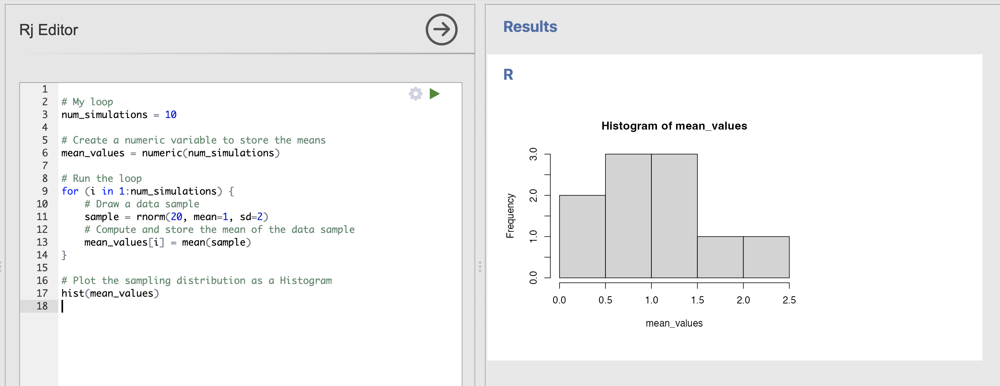
Which will produce a simple Histogram of the values for us. Note that, as ever, your histogram will be a little different to mine. Try rerunning the code a few times to get a sense of the variabity.
We can make our plot a bit more attractive and informative by specifying some additional inputs. These just change the visualisation of the histogram rather than the analysis.
# Plot the sampling distribution of t-values
hist(mean_values, main = "Sampling Distribution of Means", xlim=c(-2, 4),
xlab = "Sample Mean", col = "skyblue", border = "white")This has a lot of inputs, lets break down what they all mean
| Input | Description |
|---|---|
mean_values |
The data sample to visualise |
main |
The main title |
xlim |
The start and end points of the x-axis within a collection |
xlab |
The label for the x-axis |
col |
The colour of the bars |
border |
The colour of the borders of the bars |
Adding these to the function call makes a much nicer and more informative image.
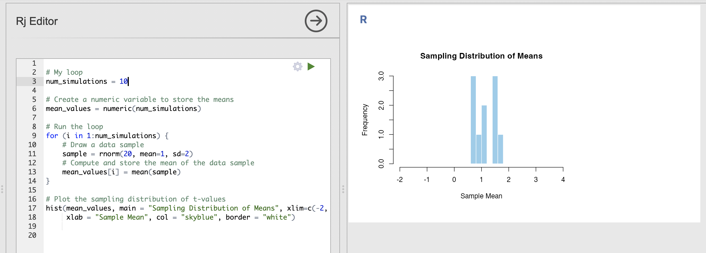
You can tweak the titles and axis labels to be sometime informative to you, and you can change the colours to be anything you like. Try customising the plot - update the labels and colours as you prefer them.
You can use the colour names defined here to customise your histogram.

5. Understanding the sampling distribution of the mean
Once your histogram is customised and ready to go - we can put our code to work and understand the core concepts.
Let’s review what we have so far.
- We have constructed a loop that draws data samples from a defined population
- We compute and store the mean of that data sample
- We use a histogram to visualise the distribution of means estimated from all of the data samples
- This is the sampling distribution of the mean.
Make sure you have an organised script ready to go at this point, try adding comments to understand what each line does. You can delete some of the older parts of the code that aren’t included in the loop if you like. Your code should look something like this.:
# My loop
num_simulations = 10
# Create a numeric variable to store the means
mean_values = numeric(num_simulations)
# Run the loop
for (i in 1:num_simulations) {
# Draw a data sample
sample = rnorm(20, mean=1, sd=2)
# Compute and store the mean of the data sample
mean_values[i] = mean(sample)
}
# Plot the sampling distribution of t-values
hist(mean_values, main = "Sampling Distribution of Means", xlim=c(-2, 4),
xlab = "Sample Mean", col = "skyblue", border = "white")Recall that the variance of the sampling distribution is one of its key parameters - it tells us how precisely our estimated means map onto the known population mean. (Recall from lecture 3 that the standard error of the mean can be computed from this number).
Sampling distributions with wider variances indicate that we have less precisely estimated the mean, whereas tighter distributions indicate that we have more confidence. Let’s use our code to illustrate this concept.
Change your code to repeat the simulation 1000 times rather than just 10, you should get a much more ‘normal’ distribution that changes less when you rerun the code.
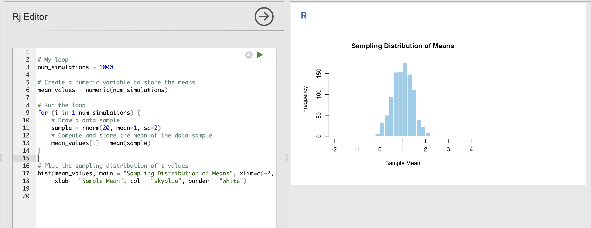
This distribution is the sampling distribution of the mean for the simulated data. We can learn the following things:
- We are most likely to estimate a value of the mean that is close to 1
- The spread of the distribution indicates that values between 0.5 and 1.5 are still fairly common
- We will very occasionally estimate a mean around 0 or around 2
Try changing your code to answer these questions.
How does the sampling distribution change when each data sample has 100 data points rather than just 20?
For this question, you’ll need to update the first input to rnorm() to have 100 data points rather than 20.
With more data in each data sample - we can see that the spread in the sampling distribution has reduced. In other words, each sample has a similar estimate of the population mean.
Compare this result to the ‘Key step’ above:
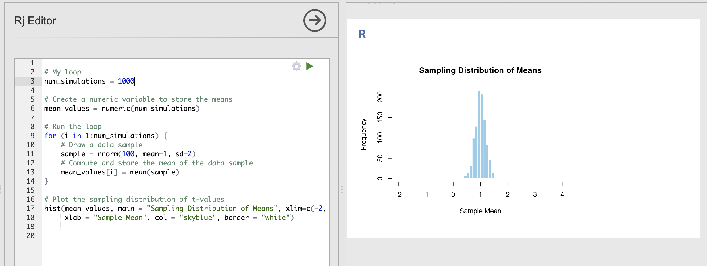
- The centre of the distribution is still very close to 1
- We will very occasionally estimate a mean around 0.5 or around 1.5, but these are rare
How does the sampling distribution change when we increase the standard deviation to 10?
For this question, you’ll need to update the sd input to rnorm() to be 10 rather than 2.
With more variability in each data sample - we can see that the variance in the sampling distribution has increased. In other words, each sample can have extremely different estimates of the population mean.
Compare this result to the ‘Key step’ above:
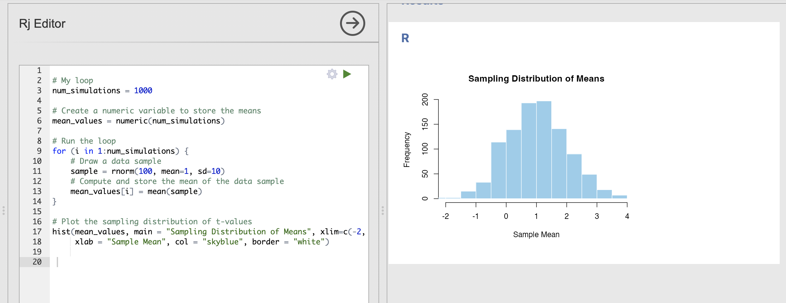
- The centre of the distribution is still very close to 1
- It is still common to get estimates of the mean of 0.5 or around 1.5.
- With this much variability, some data samples have a mean estimate as far away as -1 or 3!
Back in week 4 we computed the following descriptives for participants confidence in a range of face processing tasks.
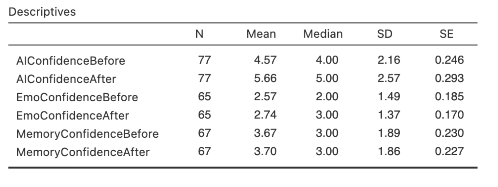
Can you compute the sampling distribution of the mean for the AIConfidenceBefore variable?
For this question, you’ll need to the number of data samples, the mean and the standard deviation using the values in hte descriptive statistics.
Its also a good idea to update the xlim of your histogram to something around c(2, 7).
The code and result should look something like this:
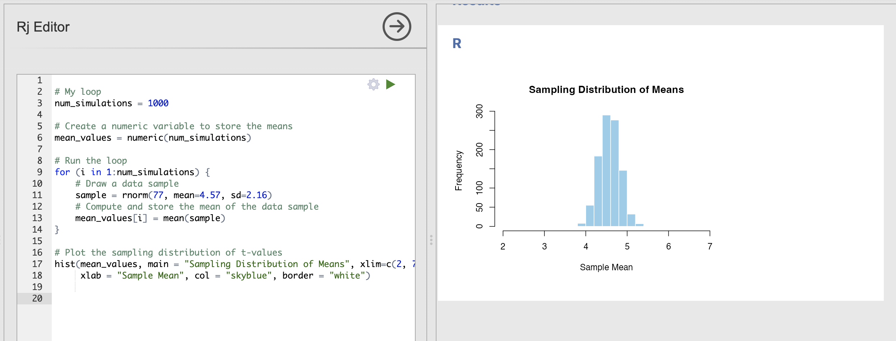
Based on this, we can see that the most commonly estimated mean value is very close to our expected mean of 4.57 and that almost every data sample has a mean of between 4 and 5.
This is a useful way to visualise how accurate our sample mean estimates are likely to be.
6. Standard Error of the Mean
The standard error of the mean is a very useful metric which tells us how our estimate of the mean is. We compute it using a formula most of the time if the parametric assumptions hold - but the best way to compute this is directly from the sampling distribution we have just created!
Once we have a sampling distribution for the mean, the standard error of the mean is simply the standard deviation of that samping distribution. Simple.
7. OPTIONAL - Sampling distributions of the maximum
Open a new Rj window and copy your code loop into it before starting this segment.
We will make large changes to the code and you may want to refer back to the previous parts for revision later.
We can compute sampling distributions for any summary statistic that we want to. This can be useful for quantifying sampling variability properties other than the mean. One straightforward example is the sampling distribution of the maximum.
Let’s use the heights of human women as an example. According to Our World in Data, the height of women born between 1980 and 1994 is normally distributed with a mean values of 164.7cm and the standard deviation is 7.07cm.
We can use these parameters to define a population that we can use to simulate our data samples. This code will draw a data sample of the height of a single person.
rnorm(1, mean=164.7, sd=7.07)We can plug this into our code to compute the sampling distributions for height. The full loop will look like this - remember to update the xlim input to the histograms as well!
# My loop
num_simulations = 1000
# Create a numeric variable to store the means
mean_values = numeric(num_simulations)
# Run the loop
for (i in 1:num_simulations) {
# Draw a data sample
sample = rnorm(10, mean=164.7, sd=7.07)
# Compute and store the mean of the data sample
mean_values[i] = mean(sample)
}
# Plot the sampling distribution
hist(mean_values, main = "Sampling Distribution of Mean", xlim=c(130, 200),
xlab = "Sample Mean", col = "skyblue", border = "white")This is the sampling distribution of the mean for samples of 10 data points draw from the population distribution of women’s heights. The sampling distribution shows that the average height of a group of 10 women drawn randomly from the population will nearly always fall between 160cm and 170cm.
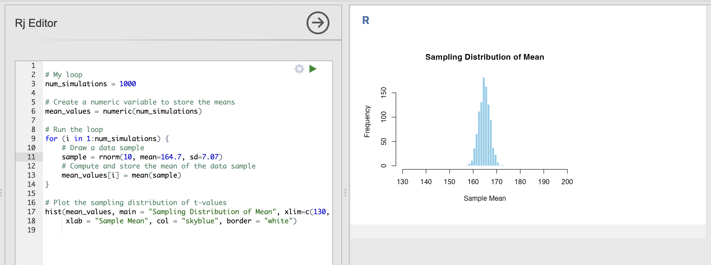
We can adapt this code to ask other questions - for example how tall is the tallest person in a group of 10 women likely to be?
We can adapt our code to compute this sampling distribution of maximums as well. Here is an exmaple - look out for sections with NEW CODE indicating a change.
Critically, we use the max() function to return the maximum value of each data sample, in exactly the same way that we used mean() to compute the average.
# My loop
num_simulations = 1000
# Create a numeric variable to store the means
mean_values = numeric(num_simulations)
max_values = numeric(num_simulations) # <- NEW CODE
# Run the loop
for (i in 1:num_simulations) {
# Draw a data sample
sample = rnorm(10, mean=164.7, sd=7.07)
# Compute and store the mean of the data sample
mean_values[i] = mean(sample)
max_values[i] = max(sample) # <- NEW CODE
}
# Plot the sampling distribution
hist(mean_values, main = "Sampling Distribution of Mean", xlim=c(130, 200),
xlab = "Sample Mean", col = "skyblue", border = "white")
# NEW CODE
hist(max_values, main = "Sampling Distribution of Maximums", xlim=c(130, 200),
xlab = "Sample Maximum", col = "skyblue", border = "white")
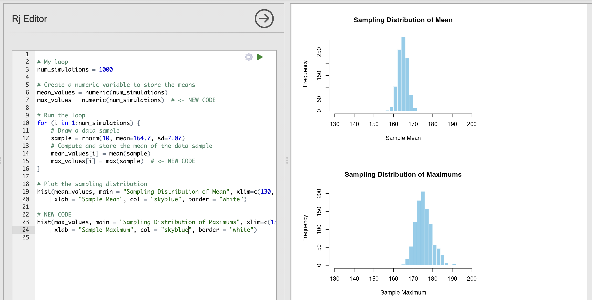
This shows us that the tallest person in a group of 10 women is likely to be between 170cm and 180cm.
Can you compute the sampling distribution of the minimum value to compute the height of the shortest person in groups of 10 women?
Update the code that you have already written.
Take a look at the changes highlighted in the previous section, can you repeat those changes to include an equivalent to the maximum?
The following code computes and displays the sampling distribution of the minimum value.
# My loop
num_simulations = 1000
# Create a numeric variable to store the means
mean_values = numeric(num_simulations)
max_values = numeric(num_simulations)
min_values = numeric(num_simulations)
# Run the loop
for (i in 1:num_simulations) {
# Draw a data sample
sample = rnorm(4, mean=164.7, sd=7.07)
# Compute and store the mean of the data sample
mean_values[i] = mean(sample)
max_values[i] = max(sample)
min_values[i] = min(sample)
}
# Plot the sampling distribution of t-values
hist(mean_values, main = "Sampling Distribution of Mean", xlim=c(130, 200),
xlab = "Sample Mean", col = "skyblue", border = "white")
hist(max_values, main = "Sampling Distribution of Maximums", xlim=c(130, 200),
xlab = "Sample Maximum", col = "skyblue", border = "white")
hist(min_values, main = "Sampling Distribution of Minimums", xlim=c(130, 200),
xlab = "Sample Minimum", col = "skyblue", border = "white")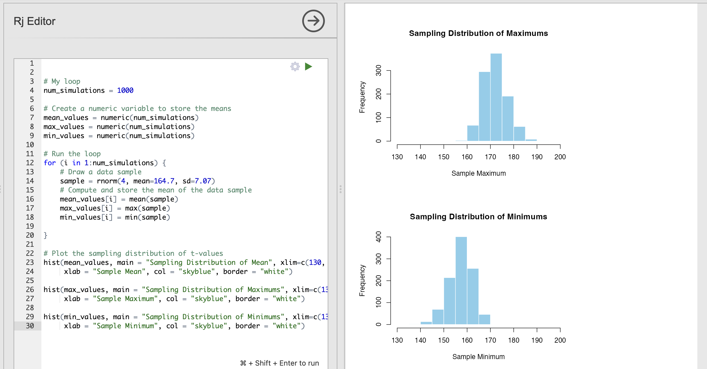
8. OPTIONAL - Sampling distributions from non-normal data
Throughout this course, we have seen many data variables that are not normally distributed. Examples include dice rolls, reaction times and the intrusive memories from last week. These are interesting datasets but don’t follow some of the nice assumptions that we can use with normally distributed data.
Now that we have our loops to compute sampling distributions, we can explore how much of a problem non normally distributed data is for our estimates.
Open a new Rj window and copy your code loop from section 5 into it before starting this segment.
We will make large changes to the code and you may want to refer back to the previous parts for revision later.
Let’s simulate some data for an experiment. Let’s simulate data from an experiment where participants indicate their confidence in performing some action on a scale from 1 to 10. The absolute truth of these data observations is that every participant has a equal probability of selecting any confidence from 1 to 10 - this is known as a uniform distribution and it is very different to a normal distribution.
We can simulate this data using runif() - note that this is an abbreviation of ‘random uniform’, not an indication to ‘run if’ something happens…
To use runif() we specify an n as usual in addition to the smallest and largest values that might occur.
runif(n, min = 1, max = 10)As usual, we can slot this into our data loop to simulate our uniform distribution. Let’s start by drawing a single value during each repetition of the experiment. This will visualise our distribution.
# My loop
num_simulations = 1000
# Create a numeric variable to store the means
mean_values = numeric(num_simulations)
# Run the loop
for (i in 1:num_simulations) {
# Draw a data sample
sample = runif(1, min = 1, max = 10)
# Compute and store the mean of the data sample
mean_values[i] = mean(sample)
}
# Plot the sampling distribution of t-values
hist(mean_values, main = "Sampling Distribution of Mean", xlim=c(0, 11),
xlab = "Sample Mean", col = "skyblue", border = "white")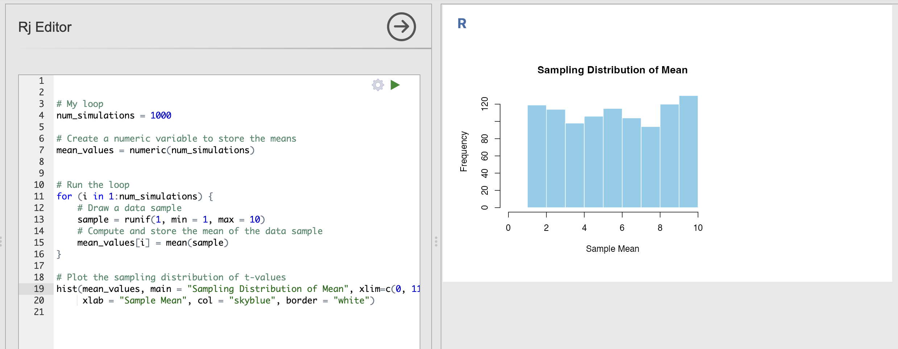
You can run this a few times to verify that the histogram shows a nearly uniform distribution where all outcomes are approximately equally likely to occur.
Now, something odd happens when we increase the size of each data sample drawn from our population parameters. Rather than visualising the response of a single individual - lets take a look at the average response of 10 different individuals.
Update the code to have an n of 10 rather than 1 in the call to runif().
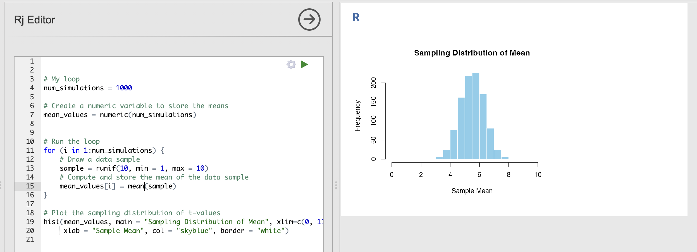
Now, though the raw data are uniformly distributed - the averages of uniform variables look like they are more normally distributed. Strange.
This is a property called the Central Limit Theorem. The Central Limit Theorem states that, given a sufficiently large sample size, the sampling distribution of the sample mean will be approximately normally distributed, regardless of the shape of the population distribution.
This is important as it tells us that the properties of data can change when we make computations from it. In our example, each individual response is uniformly distributed but the average response is approximately normally distributed.
Secondly, this is why the normal distribution is so important. The Central Limit Theorem means that is weirdly likely that we will encounter normally distributed data variables - any variable that is an aggregate of other things becomes more and more normally distributed. We often deal with this sort of composite data in Psychology,
The learning statistics with jamovi textbook as an excellent description of central limit theorem if you want more information.
9. Summary
We’ve done a lot of work to consolidate our skills on filtering data and computing one sample t-tests! You should now be able to compute these tests in Jamovi and create reproducible R code.